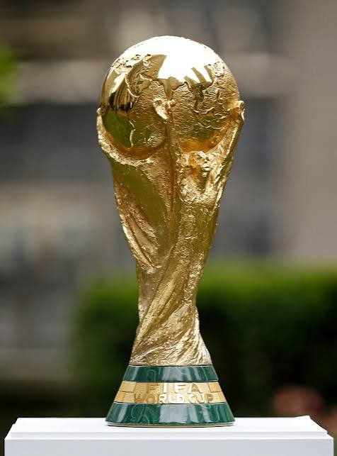

La Copa Mundial de la FIFA es el evento deportivo de una sola disciplina más importante y visto del planeta, celebrado cada cuatro años desde su primera edición en Uruguay 1930. Tras el histórico torneo de 2026 organizado en conjunto por Estados Unidos, México y Canadá, España se consolidó como el vigente campeón del mundo al vencer 1-0 a la selección de Argentina en la final disputada en el MetLife Stadium de Nueva Jersey. En el palmarés histórico masculino, Brasil se mantiene como la selección más exitosa con 5 títulos, seguida por Alemania e Italia con 4, Argentina con 3, y Uruguay, Francia y España con 2 campeonatos cada uno. El torneo marcó el inicio de una nueva era al expandir de manera permanente su formato a 48 selecciones clasificadas organizadas en 12 grupos, lo que dio paso a un calendario extendido de 104 partidos en total. Con la mira puesta en el futuro, el torneo de la FIFA ya proyecta su histórica edición del centenario en 2030, la cual se desarrollará principalmente en España, Marruecos y Portugal, complementándose con partidos inaugurales conmemorativos en Argentina, Uruguay y Paraguay, consolidando la magnitud cultural, comercial y deportiva de esta cita mundialista.

| Año | Sede |
| 2022 | Qatar |
| 2026 | Mexico |